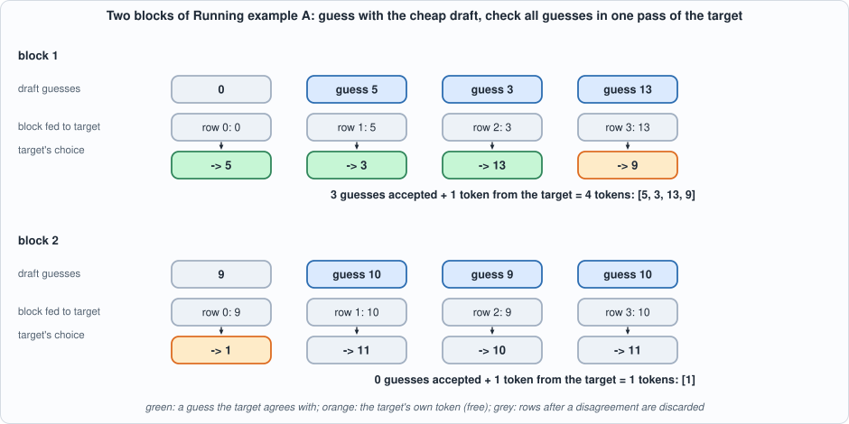
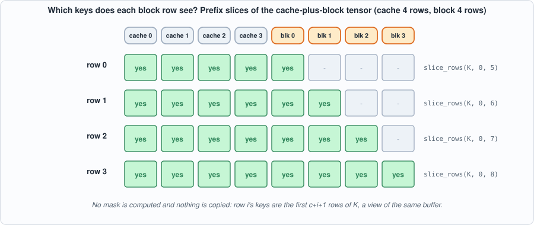
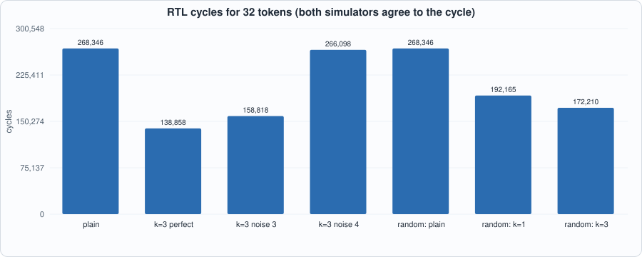
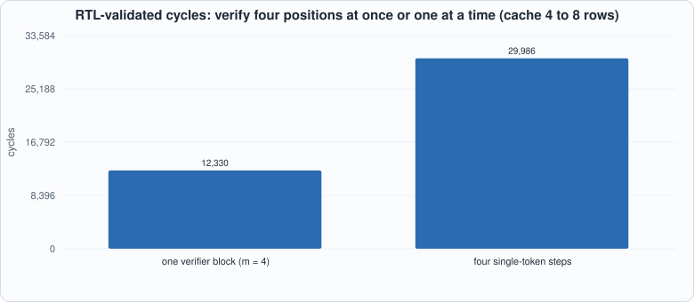
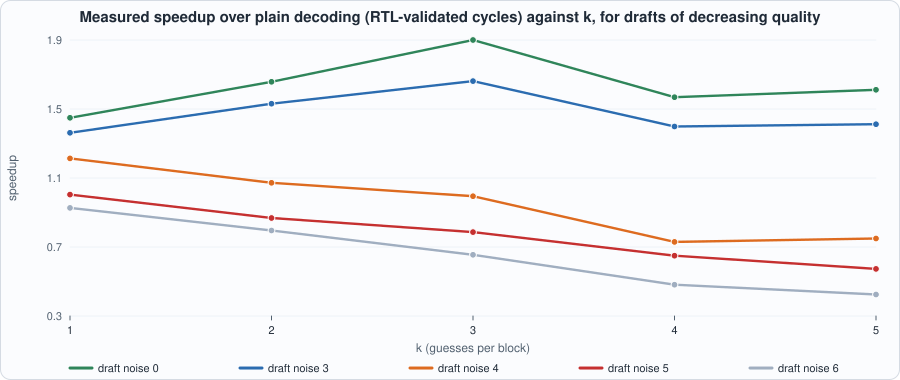
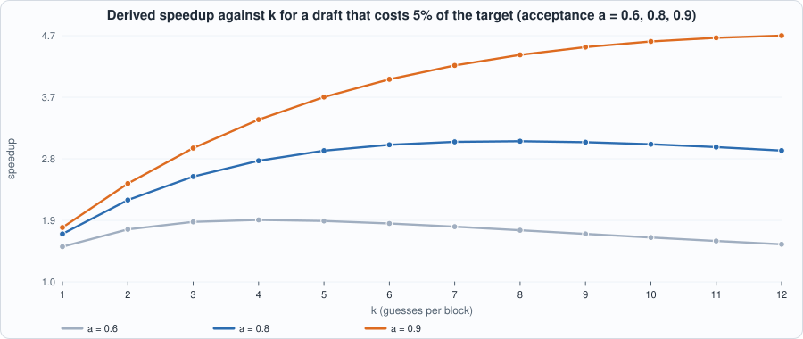

16. Speculative Decoding¶
About the animals in this picture and where they are standing
- Bezoar ibex (wild goat) (Capra aegagrus) lives from Turkey and the Caucasus through Iran to Pakistan. It is the wild ancestor of the domestic goat, which people began keeping some ten thousand years ago.
- Domestic goat (Capra hircus) descends from the bezoar ibex and is among the oldest domesticated animals. There are on the order of a billion of them, kept for milk, meat, fibre and as pack animals.
- Markhor (Capra falconeri) lives in the mountains of Pakistan, Afghanistan and neighbouring regions. The males' horns twist in a corkscrew; the name is often explained as Persian for 'snake-eater'. It is Pakistan's national animal, and community-based conservation has helped some populations recover.
- Alpine ibex (Capra ibex) lives in the European Alps, usually above the tree line on steep rock, and is a famously sure-footed climber. Males carry horns that can reach about a metre. Hunting left only a small remnant, around the Gran Paradiso in Italy, by the early 1800s; reintroductions have since restored it across the Alps.
The scene is imaginary: it is set on Europa, the icy moon of Jupiter, which hides a salty ocean beneath its ice; Jupiter fills the sky. The animals are stylised drawings, shown where they could not live, for effect.
What you will see: a way to get several tokens out of one pass over the target model's weights, without changing a single token it would have produced. A cheap draft model guesses the next k tokens; the target model verifies all of them (and one more position) in one batched pass; the longest agreeing prefix is accepted and the target's own token at the first disagreement comes free. To build the verifier the compiler learns one new operation, slice_rows, a view that makes a causal mask out of prefix slices. On the RTL, in both simulators, a perfect draft decodes 32 tokens in 138,858 cycles against 268,346 for plain decoding (1.93x), a poor draft makes it slower, and a generic random target gets 1.56x with a bigram draft.
What you need to know first: Chapter 9 (why decode is limited by the weights), Chapter 11 (the compiler) and Chapter 12 (the tiny model and its host loop). Chapters 14 and 15 are not required.
What this chapter builds: the slice_rows operation in model/capra.py and its battery in model/capra_tests.py; model/spec_lm.py (verifier graph, block float reference, draft model, host loop), model/spec_tests.py; tools/ch16_run.py, tools/mut_ch16.py, tools/mut_ch16_compiler.py; and the running examples tools/ch16_example_a.py and tools/ch16_example_b.py. No hardware change.
Why guess¶
A decode step at batch 1 loads every weight once (Chapter 9: 2,304 words here, 7 GB on a real model) to produce one token, and the multiplier is idle for most of it. If we could process several tokens in the same pass, the weights would be loaded once for all of them. The obstacle is that token t+1 is not known until token t has been chosen. Speculative decoding (Leviathan et al. and Chen et al., 2023) gets around it by guessing the following tokens cheaply, then checking the guesses in parallel.
- Draft. A small, fast model proposes
ktokens one after another:d_0, d_1, ... d_{k-1}. Here the draft is a bigram table (one matmul). - Verify. The target processes the block
[last token, d_0, ..., d_{k-1}](m = k+1rows) in one pass. Rowiproduces the target's logits after seeing the cache, the last token and guessesd_0 .. d_{i-1}; its argmaxp_iis what the target would choose at that point. - Accept. Guess
d_jis right ifd_j = p_j. Take the longest prefix of right guesses, sayaof them. Rowawas computed after exactly the accepted tokens, so its choicep_ais the target's genuine next token: it is appended for free. The block yieldsa + 1tokens, between 1 andk + 1. - Keep the cache rows for the tokens that are now committed (rows
0 .. a) and drop the rest.

Figure 16.1: two blocks of Running example A. In block 1 the draft guesses 5, 3, 13 and the target agrees with all three and adds 9: four tokens for one pass. In block 2 the first guess is wrong, so one token is gained: the same as plain decoding, plus the cost of the wasted guesses.Why the output is exactly the target's¶
Every token in the output is either a guess the target itself chose at that position (d_j = p_j) or a token the target chose (p_a). Each of those choices was computed from a prefix that consists only of already-accepted tokens. So the output sequence is, by construction, the sequence that greedy decoding with the target would produce, whatever the draft says. A better draft only changes how many tokens come out of each pass; a terrible draft cannot change which tokens. (This is the greedy version. Sampling needs a rejection rule that preserves the target's probability distribution; this book does not cover it.)
The caveat for a chip. The argument is exact when the target's choice for a position does not depend on how the computation is batched. In floating point it does not (the test below shows it to 1e-9). In int8 arithmetic, different program shapes have different scales and different rounding, so a verifier of four rows can in principle choose a different token than a single-row step would. The book therefore reports what it can measure: the speculative output equals the chip's own plain greedy output on both models tested (32 of 32 tokens, identical), and the exactness is proved in the floating-point model for every draft the tests try.
The compiler's new operation: slice_rows¶
The verifier needs, for each block row i, a query row and a prefix of the keys: row i may attend the cache and block rows 0 .. i, nothing later. Capra has no mask operation, and adding one would mean a new instruction. But a mask of this shape is a slice: the keys visible to row i are the first c + i + 1 rows of the cache-plus-block tensor K. concat_rows already turned "append to the cache" into a view (two loads into one buffer); slice_rows is its mirror, "a part of a tensor" as a view: no instruction, no copy, only an offset into the source's buffer.
def slice_rows(self, a, start, count):
"""Rows start .. start+count-1 of a tensor, as a VIEW: no instruction, no copy (Chapter 16). The slice shares the source's scale and lives inside the source's buffer."""
r = self.nodes[a].shape[0]
if count < 1 or start < 0 or start + count > r: raise CompileError(f"slice_rows: rows {start}..{start + count - 1} do not lie inside a tensor of {r} rows")
return self._add("slice", [a], (count, self.nodes[a].shape[1]), start=start, count=count)
Where the work is done:
- Scale. A slice has the scale of its source (the same group as
reluandconcat), because it is the same numbers. - Placement. After the buffers are planned, a slice's location is its source's buffer at an offset of
startrows (loc[slice] = (buffer of source, offset + start)). - Lifetime. The source's buffer must stay alive as long as any slice of it is read; the allocator's usual rule (a buffer is last used when its last member is read) covers this because the slice is a member of the buffer.
- Refusal. A range outside the tensor, an empty range, and a slice that feeds a concatenation or a relu (which would need a copy where views are all the compiler can do) are refused.
Tests for the new operation are random graphs built around slices (slices of a product, of a concatenation, of a slice, of an input, of a weight; feeding matmuls, softmaxes, scores and argmax), run through the same checks as Chapter 11: compiled program equals the integer interpreter; every tensor read back from the scratchpad equals it; reuse equals no-reuse; error against float within a bound (0.40, set above the worst 0.28, caused by the quadratic scores operation whose range the calibration cannot always predict, as in Chapter 11); and the three refusals.
NOTE: this script deliberately breaks copies of the compiler. 'caught' is EXPECTED: it shows the battery notices the mistake.
unbroken compiler passes: True
slice: the view starts at the beginning of its source: caught
slice: the view's offset is counted in words, not rows: caught
slice: the shape keeps the source's row count: caught
slice: the interpreter takes one row too many: caught
slice: the float evaluation takes one row too few: caught
slice: its scale is not tied to its source's: caught
slice: a range past the end is accepted: caught
slice: an empty slice is accepted: caught
slice: a slice may feed a concatenation: caught
slice: the source is not loaded before its view is used: caught
slice_rows: 10 of 10 broken compilers caught
A change that looks like a bug and is not:
EQUIVALENT in effect: a slice is first given a buffer of its own, which the next loop then replaces by the view (an unused buffer entry): NOT CAUGHT
Ten of ten broken compilers are caught. The eleventh change, giving a slice a buffer of its own that the next loop immediately replaces, is equivalent: it only leaves an unused entry in a list. Listing it as equivalent rather than as "caught" is the point.
The verifier graph¶
#!/usr/bin/env python3
"""Chapter 16: speculative decoding on the tiny language model.
THE IDEA. Decoding one token costs a whole pass over the weights, and the chip is limited by loading them (Chapter 9). A cheap DRAFT model guesses the next k tokens; the expensive TARGET model then checks all k guesses, plus one more position, in ONE pass over its weights: the guessed tokens go through the target together, as a block of m = k+1 rows, with a causal rule (row i may look at the cache and at rows 0..i of the block, no further). The target's own greedy choice after each row is compared with the draft's guess: the longest agreeing prefix is accepted, and the target's choice at the first disagreement (or after the last guess) is a free extra token. One pass over the weights therefore yields between 1 and k+1 tokens, and the tokens are exactly those the target would have produced alone (greedy), because every accepted token is one the target itself chose.
THE DRAFT here is a bigram model: logits = embedding[token] Wd (one 16 x 16 matrix, one matmul). THE VERIFIER is a Capra graph with m query rows; the causal rule uses slice_rows (Chapter 16's new view operation): row i's query is a one-row slice of Q, and its keys and values are PREFIX slices of the cache-plus-block tensors: rows 0 .. c+i. Nothing is copied.
"""
import math, os, random, sys
sys.path.insert(0, os.path.dirname(os.path.abspath(__file__)))
os.environ.setdefault("GA2_EXT", "8192")
import capra as C, tiny_lm as T, ga2_isa as I
V = D = 16; HID = 32
# ---------------------------------------------------------------- the verifier graph: m rows, c rows of cache
def build_verify(m, c, mdl):
g = C.Graph(); X = g.tag(g.input("x", (m, D)), "x"); w = lambda nm: g.weight(nm, mdl[nm])
Q = g.matmul(X, w("Wq")); Kn = g.tag(g.matmul(X, w("Wk")), "k"); Vn = g.tag(g.matmul(X, w("Wv")), "v")
if c > 0: K = g.tag(g.concat_rows(g.tag(g.input("kc", (c, D)), "k"), Kn), "k"); Vv = g.tag(g.concat_rows(g.tag(g.input("vc", (c, D)), "v"), Vn), "v")
else: K, Vv = Kn, Vn
A = None
for i in range(m):
qi = g.slice_rows(Q, i, 1); Ki = g.slice_rows(K, 0, c + i + 1); Vi = g.slice_rows(Vv, 0, c + i + 1)
ai = g.matmul(g.softmax(g.matmul(qi, Ki, transpose_b=True, scale=1 / math.sqrt(D))), Vi); A = ai if A is None else g.concat_rows(A, ai)
g.output(A, "attn"); h = g.add(X, g.matmul(A, w("Wo"))); y = g.add(h, g.matmul(g.relu(g.matmul(h, w("W1"))), w("W2"))); lg = g.matmul(y, w("Wout"))
g.output(g.argmax(lg), "tok"); g.output(lg, "logits"); g.output(Kn, "k_new"); g.output(Vn, "v_new"); return g
def build_draft(Wd):
g = C.Graph(); x = g.input("x", (1, D)); lg = g.matmul(x, g.weight("Wd", Wd)); g.output(g.argmax(lg), "tok"); g.output(lg, "logits"); return g
# ---------------------------------------------------------------- the floating-point verifier, written as a block with an explicit mask (independent of float_step)
def float_block(mdl, toks, kc, vc, aux=None):
"""Logits of every row of a block of tokens given a cache, as the matrix computation with a causal mask. Returns (logits rows, k rows, v rows)."""
m = len(toks); c = len(kc); X = [mdl["E"][t] for t in toks]; att = []
Q = [T.mv(x, mdl["Wq"]) for x in X]; Kn = [T.mv(x, mdl["Wk"]) for x in X]; Vn = [T.mv(x, mdl["Wv"]) for x in X]; K = kc + Kn; Vv = vc + Vn; out = []
for i in range(m):
s = [sum(Q[i][t] * K[j][t] for t in range(D)) / math.sqrt(D) if j <= c + i else -1e30 for j in range(c + m)]; mx = max(s); e = [math.exp(t - mx) if t > -1e29 else 0.0 for t in s]; z = sum(e)
a = [sum(e[j] / z * Vv[j][t] for j in range(c + m)) for t in range(D)]; att.append(a); h = [x + o for x, o in zip(X[i], T.mv(a, mdl["Wo"]))]
f = T.mv([max(0.0, t) for t in T.mv(h, mdl["W1"])], mdl["W2"]); out.append(T.mv([a_ + b_ for a_, b_ in zip(h, f)], mdl["Wout"]))
if aux is not None: aux["attn"] = att
return out, Kn, Vn
# ---------------------------------------------------------------- the draft model
def solve(A, B):
n = len(A); M = [list(A[i]) + list(B[i]) for i in range(n)]
for i in range(n):
p = max(range(i, n), key=lambda r: abs(M[r][i])); M[i], M[p] = M[p], M[i]; d = M[i][i]; M[i] = [x / d for x in M[i]]
for r in range(n):
if r != i: f = M[r][i]; M[r] = [a - f * b for a, b in zip(M[r], M[i])]
return [row[n:] for row in M]
def make_draft(mdl, noise, seed=0):
"""Wd such that embedding[t] Wd is a table of logits: for the structured model one-hot at f(t) (the rule), for a random model the log-frequency of the target's own next token after t; plus Gaussian noise of size `noise`."""
R = random.Random(seed); L = [[0.0] * V for _ in range(V)]
if mdl["kind"] == "structured":
for t in range(V): L[t][T.f_next(t)] = 8.0
else:
cnt = [[0.5] * V for _ in range(V)]
for s in range(V):
toks = T.float_generate(mdl, s, 24)
for a, b in zip(toks, toks[1:]): cnt[a][b] += 1
for t in range(V): z = sum(cnt[t]); L[t] = [4 * math.log(x / z * V) for x in cnt[t]]
L = [[x + R.gauss(0, noise) for x in r] for r in L]; return solve(mdl["E"], L)
def draft_next(mdl, Wd, tok): lg = T.mv(mdl["E"][tok], Wd); return lg.index(max(lg))
# ---------------------------------------------------------------- the host loop
def speculate(mdl, Wd, start, n, k, verify, draft=None):
"""Generate n tokens. verify(c, toks, kc, vc) -> (token choice per row, k rows, v rows); draft(tok) -> next token. Returns tokens, stats and the list of calls made."""
seq = [start]; kc, vc = [], []; calls = []; proposed = accepted = blocks = 0
while len(seq) - 1 < n:
d = []; t = seq[-1]
for _ in range(k): t = draft(t); d.append(t); calls.append(("draft",))
block = [seq[-1]] + d; choice, ks, vs = verify(len(kc), block, kc, vc); calls.append(("verify", len(kc), len(block)))
a = 0
while a < k and d[a] == choice[a]: a += 1
seq += d[:a] + [choice[a]]; kc += ks[:a + 1]; vc += vs[:a + 1]; proposed += k; accepted += a; blocks += 1
return seq[:n + 1], {"blocks": blocks, "proposed": proposed, "accepted": accepted, "emitted": len(seq) - 1, "cache": len(kc)}, calls
def float_verify(mdl):
def f(c, toks, kc, vc):
lg, ks, vs = float_block(mdl, toks, kc, vc); return [r.index(max(r)) for r in lg], ks, vs
return f
class SpecChip:
"""Compiles the verifier for each (c, m) and the draft once; calibrates from float runs of the same host loop."""
def __init__(self, mdl, Wd, n, k, starts=range(V)):
self.m = mdl; self.Wd = Wd; self.k = k; self.vprogs = {}; self.dprog = None; self.log = []
self.calib = {}; rk = rv = rx = 0.0; dsamples = []
for s in starts:
def ver(c, toks, kc, vc, s=s):
nonlocal rk, rv, rx
lg, ks, vs = float_block(mdl, toks, kc, vc); inp = {"x": [list(mdl["E"][t]) for t in toks]}
if c > 0: inp["kc"] = [list(r) for r in kc]; inp["vc"] = [list(r) for r in vc]
self.calib.setdefault((c, len(toks)), []).append(inp)
rk = max(rk, max(abs(t) for r in ks for t in r)); rv = max(rv, max(abs(t) for r in vs for t in r)); rx = max(rx, max(abs(t) for t in toks and mdl["E"][toks[0]]))
return [r.index(max(r)) for r in lg], ks, vs
def dr(t): dsamples.append({"x": [list(mdl["E"][t])]}); return draft_next(mdl, Wd, t)
speculate(mdl, Wd, s, n, k, ver, dr)
self.ranges = {"x": max(max(abs(t) for t in r) for r in mdl["E"]), "k": rk, "v": rv}; self.dcalib = dsamples
def _vprog(self, c, mm):
if (c, mm) not in self.vprogs: self.vprogs[(c, mm)] = C.compile_graph(build_verify(mm, c, self.m), self.calib[(c, mm)], ranges=self.ranges)
return self.vprogs[(c, mm)]
def verify(self, c, toks, kc, vc):
P = self._vprog(c, len(toks)); inp = {"x": [list(self.m["E"][t]) for t in toks]}
if c > 0: inp["kc"] = [list(r) for r in kc]; inp["vc"] = [list(r) for r in vc]
out = C.run(P, inp); self.last = out; self.log.append({"kind": "verify", "c": c, "m": len(toks), "code": P.code, "ext": C.ext_image(P, inp)})
return [r[0] for r in out["tok"][0]], [list(r) for r in out["k_new"][1]], [list(r) for r in out["v_new"][1]]
def draft(self, t):
if self.dprog is None: self.dprog = C.compile_graph(build_draft(self.Wd), self.dcalib)
inp = {"x": [list(self.m["E"][t])]}; out = C.run(self.dprog, inp); self.log.append({"kind": "draft", "code": self.dprog.code, "ext": C.ext_image(self.dprog, inp)}); return out["tok"][0][0][0]
def generate(self, start, n):
self.log = []; toks, st, calls = speculate(self.m, self.Wd, start, n, self.k, self.verify, self.draft); return toks, st, list(self.log)
def cycles_of(log): return sum(I.cycle_counts(r["code"])[0] for r in log)
if __name__ == "__main__":
m = T.make_model("structured"); exp = [0]
for _ in range(24): exp.append(T.f_next(exp[-1]))
for noise in (0.0, 4.0):
Wd = make_draft(m, noise); chip = SpecChip(m, Wd, 24, 3); toks, st, log = chip.generate(0, 24); print(f"noise {noise}: rule ok {toks == exp}; {st}; cycles {cycles_of(log)}; calls {len(log)}")
build_verify(m, c, model) is Chapter 12's decode step with m rows at once. The projections Q, K_new, V_new are single m x 16 matmuls (the weights are loaded and multiplied once for all rows), and then each row's attention uses slices:
qi = slice_rows(Q, i, 1) # row i of the queries
Ki = slice_rows(K, 0, c + i + 1) # the cache and block rows 0..i
Vi = slice_rows(V, 0, c + i + 1)
ai = matmul(softmax(matmul(qi, Ki^T)), Vi)

Figure 16.2: the mask for a cache of 4 rows and a block of 4 rows. Green cells are the keys each row's slice contains; the program does no masking arithmetic.The row outputs a_i are concatenated back into an m x 16 tensor (using concat_rows, again a view), and the output projection, the feed-forward block and the final projection run once for all rows. The verifier also returns the attention output (for the tensor-level tests), the new keys and values (so the host can keep the right ones) and the argmax of every row.
The block float reference (float_block) is written independently of the single-token step: it forms the whole score matrix and applies an explicit mask (-1e30 for later positions). The first test checks that it equals the one-token-at-a-time float_step exactly.
Tests¶
#!/usr/bin/env python3
"""Chapter 16: the checks of speculative decoding. Returns a list of problems; empty means all pass.
(1) the block form of the float verifier (explicit causal mask) equals the one-token-at-a-time float step, for random models, cache sizes and block sizes;
(2) EXACTNESS: with the float verifier, speculative decoding produces exactly the target's greedy tokens whatever the draft (perfect, noisy, adversarial, random) and whatever k, and the bookkeeping is consistent;
(3) CAUSALITY on the chip: changing a later token of a block leaves the integer outputs of every earlier row bit-identical; changing an earlier token does change later rows;
(4) the compiled verifier equals the integer interpreter, and its logits and new rows are close to float;
(5) the structured model follows its rule through the chip's speculative loop, for several k and draft qualities; the draft's chip program picks the same token as the float draft."""
import math, os, random, sys
sys.path.insert(0, os.path.dirname(os.path.abspath(__file__)))
import capra as C, tiny_lm as T, spec_lm as S
def rel(a, b): return math.sqrt(sum((x - y) ** 2 for x, y in zip(a, b)) / (sum(y * y for y in b) or 1.0))
def check_all():
P = []
for seed in (1, 2, 3): # (1)
m = T.make_model("random", seed); R = random.Random(seed); toks = [R.randrange(16) for _ in range(9)]; kc, vc = [], []
for t in toks[:4]: _, k, v, _ = T.float_step(m, t, kc, vc); kc.append(k); vc.append(v)
for mm in (1, 2, 4, 5):
lg, ks, vs = S.float_block(m, toks[4:4 + mm], kc, vc); kc2, vc2 = list(kc), list(vc)
for i, t in enumerate(toks[4:4 + mm]):
l1, k1, v1, _ = T.float_step(m, t, kc2, vc2); kc2.append(k1); vc2.append(v1)
if max(abs(a - b) for a, b in zip(lg[i], l1)) > 1e-9 or max(abs(a - b) for a, b in zip(ks[i], k1)) > 1e-9: P.append(f"(1) seed {seed} block {mm} row {i}: block form differs from the sequential step")
for seed in (1, 2, 3): # (2)
m = T.make_model("random" if seed != 3 else "structured", seed); ref = T.float_generate(m, 5, 20); R = random.Random(seed); drafts = {"random": lambda t: R.randrange(16), "constant": lambda t: 7}
for noise in (0.0, 3.0, 100.0):
Wd = S.make_draft(m, noise, seed); drafts[f"bigram noise {noise}"] = lambda t, Wd=Wd, m=m: S.draft_next(m, Wd, t)
for k in (1, 2, 3, 5):
for name, dr in drafts.items():
toks, st, calls = S.speculate(m, None, 5, 20, k, S.float_verify(m), dr)
if toks != ref: P.append(f"(2) seed {seed} k={k} draft {name}: speculative tokens differ from the target's greedy tokens")
if st["accepted"] > st["proposed"] or st["blocks"] * (k + 1) < 20 or st["blocks"] > 20 or st["proposed"] != st["blocks"] * k or st["emitted"] != st["accepted"] + st["blocks"] or st["cache"] != st["emitted"]: P.append(f"(2) seed {seed} k={k} draft {name}: inconsistent counts {st}")
m = T.make_model("random", 2); m["Wq"] = [[4 * x for x in r] for r in m["Wq"]]; m["Wk"] = [[4 * x for x in r] for r in m["Wk"]] # (3), (4): a model with SHARP attention, so that a wrong mask or query changes the output visibly
c = 4; R = random.Random(9); samples = []; rk = rv = 0.0
def prefix(toks):
kc, vc = [], []
for t in toks: _, k, v, _ = T.float_step(m, t, kc, vc); kc.append(k); vc.append(v)
return kc, vc
for _ in range(40):
pre = [R.randrange(16) for _ in range(c)]; blk = [R.randrange(16) for _ in range(4)]; kc, vc = prefix(pre); lg, ks, vs = S.float_block(m, blk, kc, vc)
samples.append({"x": [list(m["E"][t]) for t in blk], "kc": kc, "vc": vc}); rk = max(rk, max(abs(t) for r in kc + ks for t in r)); rv = max(rv, max(abs(t) for r in vc + vs for t in r))
rngs = {"x": max(max(abs(t) for t in r) for r in m["E"]), "k": rk, "v": rv}; Pg = C.compile_graph(S.build_verify(4, c, m), samples, ranges=rngs); pre = [3, 8, 1, 12]; kc, vc = prefix(pre)
def run(block):
inp = {"x": [list(m["E"][t]) for t in block], "kc": [list(r) for r in kc], "vc": [list(r) for r in vc]}; out = C.run(Pg, inp); ref = C.interpret(Pg, inp)
if any(out[nm][0] != ref[e["node"]] for nm, e in Pg.ext.items() if e["kind"] == "output"): P.append("(4) compiled verifier differs from the interpreter")
return out
a = run([1, 2, 3, 4]); b = run([1, 2, 9, 4]); d = run([1, 2, 3, 12]); e2 = run([5, 2, 3, 4])
if a["logits"][0][:2] != b["logits"][0][:2]: P.append("(3) changing row 2 changed the output of rows 0 or 1: the block is not causal")
if a["logits"][0][:3] != d["logits"][0][:3]: P.append("(3) changing row 3 changed the output of rows 0-2: the block is not causal")
if a["logits"][0][2:] == b["logits"][0][2:]: P.append("(3) changing row 2 did not change rows 2 or 3: rows do not see the block")
if a["logits"][0][1:] == e2["logits"][0][1:]: P.append("(3) changing row 0 did not change later rows: rows do not see earlier block rows")
aux = {}; lg, ks, vs = S.float_block(m, [1, 2, 3, 4], kc, vc, aux)
for i in range(4):
if rel(a["logits"][1][i], lg[i]) > 0.15: P.append(f"(4) block row {i}: chip logits differ from float by {rel(a['logits'][1][i], lg[i]):.2f}")
if rel(a["attn"][1][i], aux["attn"][i]) > 0.12: P.append(f"(4) block row {i}: attention output differs from float by {rel(a['attn'][1][i], aux['attn'][i]):.2f}")
if rel(a["k_new"][1][i], ks[i]) > 0.12 or rel(a["v_new"][1][i], vs[i]) > 0.12: P.append(f"(4) block row {i}: new key or value differs from float")
m = T.make_model("structured")
exp = [0]
for _ in range(16): exp.append(T.f_next(exp[-1]))
for k in (1, 2, 4):
for noise in (0.0, 3.0, 12.0):
Wd = S.make_draft(m, noise, 1); chip = S.SpecChip(m, Wd, 16, k, starts=range(16)); toks, st, log = chip.generate(0, 16)
if toks != exp: P.append(f"(5) k={k} noise {noise}: tokens differ from the rule")
if noise == 0.0 and st["accepted"] != st["proposed"]: P.append(f"(5) k={k}: a perfect draft must be accepted completely, got {st}")
if k == 1 and noise == 0.0:
for t in range(4):
if chip.draft(t) != S.draft_next(m, Wd, t): P.append(f"(5) the draft's chip program picks a different token from the float draft after {t}")
return P
if __name__ == "__main__":
p = check_all(); print("problems:", p if p else "none")
- Block form equals sequential form (floating point, random models, several cache and block sizes): logits, keys and values to 1e-9.
- Exactness, with the float verifier. Speculative decoding produces exactly the target's greedy tokens for every draft tried: random tokens, a constant, and bigram tables with noise 0, 3 and 100, for three models, for
k = 1, 2, 3, 5. The bookkeeping must be consistent: tokens emitted equals accepted guesses plus blocks, and the cache length equals the tokens emitted. - Causality on the chip, in integers. Run the compiled verifier on
[1,2,3,4]and[1,2,3,12]: the integer logits of rows 0-2 must be bit-identical (the last token is invisible to earlier rows); run it on[1,2,9,4]: row 2 and later must differ, and row 0 and 1 must not; run it on[5,2,3,4]: row 0 and later must differ. This uses a model with sharp attention (WqandWkmultiplied by 4), because in the structured model attention is nearly uniform and a wrong mask is invisible. - The compiled verifier equals the interpreter, and its logits, attention output, new keys and values are within 15%, 12%, 12% of floating point.
- The rule
f(t) = 5t + 3 mod 16is followed through the chip's speculative loop fork = 1, 2, 4and three draft qualities; a perfect draft is accepted completely; and the draft's chip program picks the same token as the float draft.
#!/usr/bin/env python3
"""Chapter 16: speculative decoding. (1) the software checks; (2) 32 tokens of the tiny model decoded plainly and speculatively (several draft qualities, two target models), every program executed replayed on the RTL in both simulators. Usage: ch16_run.py"""
import os, re, sys
os.environ["GA2_EXT"] = "8192"
sys.path.insert(0, os.path.dirname(os.path.abspath(__file__))); sys.path.insert(0, os.path.join(os.path.dirname(os.path.abspath(__file__)), "..", "model"))
import hw, ga2_progs as G_, ga2_isa as I, tiny_lm as T, spec_lm as S, spec_tests as ST
F = ["rtl/sram.v", "rtl/dma.v", "rtl/systolic.v", "rtl/requant.v", "rtl/exp_lut.v", "rtl/divu.v", "rtl/rowmem.v", "rtl/ga2_vec.v", "rtl/ga2_sm.v", "rtl/ga2_mm.v", "rtl/ga2.v", "tb/extmem_rw.v", "tb/ga2_tb.v"]
def line(out): return ([l for l in out.splitlines() if l.startswith(("PASS", "FAIL", "MISMATCH"))] or out.strip().splitlines()[-2:])[0]
N = 32
print("== 1. software checks: block form == sequential float step; exactness for every draft; causality on the chip (integer-identical rows); attention/keys/values/logits close to float; the rule through the chip's loop")
p = ST.check_all(); print(" problems:", p if p else "none")
def replay(label, log):
words = [len(log)]
for r in log: words += G_.record(r["code"], r["ext"])
open(os.path.join(hw.ROOT, "out", "ga2_programs.hex"), "w").write("\n".join("%08x" % (w & 0xFFFFFFFF) for w in words) + "\n"); cnt = {}
for name, fn in (("Icarus", hw.sim_icarus), ("Verilator", hw.sim_verilator)):
rc, out = fn(F, "ga2_tb", defines=("EXTW=8192", "DUMP")); print(f" {label:34s}{name:10s}{line(out)} (exit {rc})")
cnt[name] = [int(mm.group(2)) for mm in re.finditer(r"COUNTERS (\d+) (\d+) (\d+) (\d+) (\d+) (\d+)", out)]
assert cnt["Icarus"] == cnt["Verilator"]; return sum(cnt["Icarus"]), cnt["Icarus"]
print("\n== 2. 32 tokens, structured model: plain greedy decoding on the chip, then speculative decoding with k = 3 and drafts of different quality")
m = T.make_model("structured"); exp = [0]
for _ in range(N): exp.append(T.f_next(exp[-1]))
chip = T.Chip(m, N); tb, rec = chip.generate(0, N); log = [{"code": r["code"], "ext": r["ext"]} for r in rec]; base, _ = replay("plain decoding (32 programs)", log)
rows = [("plain greedy decoding", tb == exp, "-", "-", len(log), base)]
for label, noise in (("draft: perfect (noise 0)", 0.0), ("draft: noisy (noise 3)", 3.0), ("draft: poor (noise 4)", 4.0)):
Wd = S.make_draft(m, noise, 1); sc = S.SpecChip(m, Wd, N, 3); toks, st, lg = sc.generate(0, N); cyc, _ = replay(f"speculative k=3, {label[7:]}", lg)
assert cyc == S.cycles_of(lg), "RTL cycles differ from the model's"
rows.append((f"speculative k=3, {label}", toks == exp, f"{st['accepted']}/{st['proposed']}", st["blocks"], len(lg), cyc))
print("\n== 3. a generic target (random weights): the draft is a bigram table fitted to the target's own output; compare with plain decoding ON THE CHIP")
mr = T.make_model("random", 1); chr_ = T.Chip(mr, N); tr, recr = chr_.generate(0, N); logr = [{"code": r["code"], "ext": r["ext"]} for r in recr]; baser, _ = replay("plain decoding, random model", logr)
rows.append(("random model: plain decoding", True, "-", "-", len(logr), baser))
for k in (1, 3):
Wd = S.make_draft(mr, 0.0, 1); sc = S.SpecChip(mr, Wd, N, k); toks, st, lg = sc.generate(0, N); cyc, _ = replay(f"speculative k={k}, random model", lg)
rows.append((f"random model: speculative k={k}", toks == tr, f"{st['accepted']}/{st['proposed']}", st["blocks"], len(lg), cyc))
print(f"\n{'run':44s} {'tokens equal':>12s} {'accepted':>9s} {'blocks':>7s} {'programs':>9s} {'RTL cycles':>11s} {'speedup':>8s}")
for r in rows:
b = base if "random" not in r[0] else baser; print(f"{r[0]:44s} {str(r[1]):>12s} {r[2]:>9s} {str(r[3]):>7s} {r[4]:9d} {r[5]:11d} {b/r[5]:7.2f}x")
print(" ('tokens equal' compares with the rule for the structured model, and with the chip's own plain greedy tokens for the random model)")
To compile and run: python3 tools/ch16_run.py (about 60 seconds). Recorded output:
== 1. software checks: block form == sequential float step; exactness for every draft; causality on the chip (integer-identical rows); attention/keys/values/logits close to float; the rule through the chip's loop
problems: none
== 2. 32 tokens, structured model: plain greedy decoding on the chip, then speculative decoding with k = 3 and drafts of different quality
plain decoding (32 programs) Icarus PASS: 32 programs match the Python reference (memory and all five cycle counters), 268346 cycles in total (exit status 0) (exit 0)
plain decoding (32 programs) Verilator PASS: 32 programs match the Python reference (memory and all five cycle counters), 268346 cycles in total (exit status 0) (exit 0)
speculative k=3, perfect (noise 0)Icarus PASS: 32 programs match the Python reference (memory and all five cycle counters), 138858 cycles in total (exit status 0) (exit 0)
speculative k=3, perfect (noise 0)Verilator PASS: 32 programs match the Python reference (memory and all five cycle counters), 138858 cycles in total (exit status 0) (exit 0)
speculative k=3, noisy (noise 3) Icarus PASS: 36 programs match the Python reference (memory and all five cycle counters), 158818 cycles in total (exit status 0) (exit 0)
speculative k=3, noisy (noise 3) Verilator PASS: 36 programs match the Python reference (memory and all five cycle counters), 158818 cycles in total (exit status 0) (exit 0)
speculative k=3, poor (noise 4) Icarus PASS: 60 programs match the Python reference (memory and all five cycle counters), 266098 cycles in total (exit status 0) (exit 0)
speculative k=3, poor (noise 4) Verilator PASS: 60 programs match the Python reference (memory and all five cycle counters), 266098 cycles in total (exit status 0) (exit 0)
== 3. a generic target (random weights): the draft is a bigram table fitted to the target's own output; compare with plain decoding ON THE CHIP
plain decoding, random model Icarus PASS: 32 programs match the Python reference (memory and all five cycle counters), 268346 cycles in total (exit status 0) (exit 0)
plain decoding, random model Verilator PASS: 32 programs match the Python reference (memory and all five cycle counters), 268346 cycles in total (exit status 0) (exit 0)
speculative k=1, random model Icarus PASS: 34 programs match the Python reference (memory and all five cycle counters), 192165 cycles in total (exit status 0) (exit 0)
speculative k=1, random model Verilator PASS: 34 programs match the Python reference (memory and all five cycle counters), 192165 cycles in total (exit status 0) (exit 0)
speculative k=3, random model Icarus PASS: 40 programs match the Python reference (memory and all five cycle counters), 172210 cycles in total (exit status 0) (exit 0)
speculative k=3, random model Verilator PASS: 40 programs match the Python reference (memory and all five cycle counters), 172210 cycles in total (exit status 0) (exit 0)
run tokens equal accepted blocks programs RTL cycles speedup
plain greedy decoding True - - 32 268346 1.00x
speculative k=3, draft: perfect (noise 0) True 24/24 8 32 138858 1.93x
speculative k=3, draft: noisy (noise 3) True 26/27 9 36 158818 1.69x
speculative k=3, draft: poor (noise 4) True 18/45 15 60 266098 1.01x
random model: plain decoding True - - 32 268346 1.00x
random model: speculative k=1 True 15/17 17 34 192165 1.40x
random model: speculative k=3 True 24/30 10 40 172210 1.56x
('tokens equal' compares with the rule for the structured model, and with the chip's own plain greedy tokens for the random model)
Cost on the chip (measured)¶

Figure 16.3: every program each run executed was replayed on the RTL; Icarus and Verilator give identical cycle counts, equal to the reference model's.| run | tokens equal | accepted / guessed | blocks | RTL cycles | speedup |
|---|---|---|---|---|---|
| plain greedy decoding | yes | 268,346 | 1.00x | ||
| k = 3, perfect draft | yes | 24 / 24 | 8 | 138,858 | 1.93x |
| k = 3, noisy draft | yes | 26 / 27 | 9 | 158,818 | 1.69x |
| k = 3, poor draft | yes | 18 / 45 | 15 | 266,098 | 1.01x |
| random target, plain | yes | 268,346 | 1.00x | ||
| random target, k = 1 | yes | 15 / 17 | 17 | 192,165 | 1.40x |
| random target, k = 3 | yes | 24 / 30 | 10 | 172,210 | 1.56x |
("Tokens equal" compares with the rule for the structured model, and with the chip's own plain greedy tokens for the random model, which is the strongest comparison available.)

Figure 16.4: where the gain comes from. Verifying four positions costs 41% of four separate steps, because the weights are loaded once.Running example A: three blocks, the program, and causality¶
#!/usr/bin/env python3
"""Chapter 16, example A: three speculative blocks traced step by step; the anatomy of the verifier program; and the causality of its rows shown in integers. Usage: ch16_example_a.py. Writes out/ch16_example_a.json"""
import json, os, random, sys
os.environ["GA2_EXT"] = "8192"
sys.path.insert(0, os.path.dirname(os.path.abspath(__file__))); sys.path.insert(0, os.path.join(os.path.dirname(os.path.abspath(__file__)), "..", "model"))
import capra as C, ga2_isa as I, tiny_lm as T, spec_lm as S
m = T.make_model("random", 1); N = 24; k = 3; Wd = S.make_draft(m, 0.0, 1); sc = S.SpecChip(m, Wd, N, k); ref = T.float_generate(m, 0, N)
print("== 1. three blocks of speculative decoding (random target, bigram draft, k = 3); the target's own greedy tokens are the reference")
print(f" target greedy tokens (float): {ref[:14]} ...")
seq = [0]; kc, vc = [], []; trace = []
for b in range(3):
t = seq[-1]; d = []
for _ in range(k): t = S.draft_next(m, Wd, t); d.append(t)
block = [seq[-1]] + d; choice, ks, vs = sc.verify(len(kc), block, kc, vc); a = 0
while a < k and d[a] == choice[a]: a += 1
new = d[:a] + [choice[a]]; trace.append({"block": block, "choice": choice, "accepted": a, "new": new})
print(f" block {b + 1}: last token {block[0]}, draft guesses {d}; target's choice after each of the {len(block)} rows {choice}")
print(f" guess 1 {'agrees' if d[0] == choice[0] else 'DISAGREES'}" + "".join(f", guess {j + 1} {'agrees' if d[j] == choice[j] else 'DISAGREES'}" for j in range(1, a + 1) if j < k) + f" -> {a} accepted, and the target's own token {choice[a]} comes free: tokens {new}; cache grows by {a + 1} rows")
seq += new; kc += ks[:a + 1]; vc += vs[:a + 1]
print(f" tokens so far {seq} == target greedy {ref[:len(seq)]}: {seq == ref[:len(seq)]}")
print("\n== 2. the anatomy of one verifier program (cache of 4 rows, block of 4 rows) against four ordinary single-token steps over the same positions")
c = 4; Pv = sc._vprog(c, 4) if (c, 4) in sc.calib else None
if Pv is None:
sc2 = S.SpecChip(m, Wd, 12, 3, starts=range(16)); Pv = sc2._vprog(c, 4)
def hist(code):
h = {}
for ins in code: h[ins["op"]] = h.get(ins["op"], 0) + 1
return h
def ldw(code): return sum(ins["c"] for ins in code if ins["op"] == "LD")
ch = T.Chip(m, 12); single = [ch.program(L) for L in range(c + 1, c + 5)]
cv = I.cycle_counts(Pv.code); cs = [I.cycle_counts(P.code)[0] for P in single]
print(f" verifier (m = 4, c = 4): {hist(Pv.code)}")
print(f" words loaded from external memory: {ldw(Pv.code)}; cycles: {cv[0]} (matrix {cv[1]}, DMA {cv[2]}, vector {cv[3]})")
print(f" four single-token steps (contexts 5, 6, 7, 8): cycles {cs} = {sum(cs)}; words loaded: {[ldw(P.code) for P in single]} = {sum(ldw(P.code) for P in single)}")
print(f" so the block costs {cv[0]/sum(cs):.2f} of the four steps: the weights ({2304} words) are loaded once, not four times.")
print("\n== 3. causality in integers: change the LAST token of the block and the integer logits of all earlier rows are identical; change an earlier token and later rows change")
sm = T.make_model("random", 2); sm["Wq"] = [[4 * x for x in r] for r in sm["Wq"]]; sm["Wk"] = [[4 * x for x in r] for r in sm["Wk"]]; R = random.Random(9); smp = []; rk = rv = 0.0
def pre(toks):
kc, vc = [], []
for t in toks: _, kk, vv, _ = T.float_step(sm, t, kc, vc); kc.append(kk); vc.append(vv)
return kc, vc
for _ in range(40):
p = [R.randrange(16) for _ in range(4)]; blk = [R.randrange(16) for _ in range(4)]; kk, vv = pre(p); lg, ks_, vs_ = S.float_block(sm, blk, kk, vv); smp.append({"x": [list(sm["E"][t]) for t in blk], "kc": kk, "vc": vv}); rk = max(rk, max(abs(t) for r in kk + ks_ for t in r)); rv = max(rv, max(abs(t) for r in vv + vs_ for t in r))
Pg = C.compile_graph(S.build_verify(4, 4, sm), smp, ranges={"x": max(max(abs(t) for t in r) for r in sm["E"]), "k": rk, "v": rv}); kk, vv = pre([3, 8, 1, 12])
def run(blk): o = C.run(Pg, {"x": [list(sm["E"][t]) for t in blk], "kc": kk, "vc": vv}); return [r[:5] for r in o["logits"][0]]
for blk in ([1, 2, 3, 4], [1, 2, 3, 12], [1, 2, 9, 4], [5, 2, 3, 4]):
print(f" block {blk}: first five integer logits of each row:"); [print(f" row {i}: {r}") for i, r in enumerate(run(blk))]
print(" rows 0-2 of [1,2,3,4] and [1,2,3,12] are identical (the last token is not visible to them); [1,2,9,4] differs from row 2 on; [5,2,3,4] differs from row 0 on.")
json.dump({"trace": trace, "verify": cv, "single": cs}, open(os.path.join(os.path.dirname(os.path.abspath(__file__)), "..", "out", "ch16_example_a.json"), "w"))
To compile and run: python3 tools/ch16_example_a.py (a few seconds).
== 1. three blocks of speculative decoding (random target, bigram draft, k = 3); the target's own greedy tokens are the reference
target greedy tokens (float): [0, 5, 3, 13, 9, 1, 11, 11, 11, 11, 11, 11, 11, 11] ...
block 1: last token 0, draft guesses [5, 3, 13]; target's choice after each of the 4 rows [5, 3, 13, 9]
guess 1 agrees, guess 2 agrees, guess 3 agrees -> 3 accepted, and the target's own token 9 comes free: tokens [5, 3, 13, 9]; cache grows by 4 rows
block 2: last token 9, draft guesses [10, 9, 10]; target's choice after each of the 4 rows [1, 11, 10, 11]
guess 1 DISAGREES -> 0 accepted, and the target's own token 1 comes free: tokens [1]; cache grows by 1 rows
block 3: last token 1, draft guesses [11, 11, 11]; target's choice after each of the 4 rows [11, 11, 11, 11]
guess 1 agrees, guess 2 agrees, guess 3 agrees -> 3 accepted, and the target's own token 11 comes free: tokens [11, 11, 11, 11]; cache grows by 4 rows
tokens so far [0, 5, 3, 13, 9, 1, 11, 11, 11, 11] == target greedy [0, 5, 3, 13, 9, 1, 11, 11, 11, 11]: True
== 2. the anatomy of one verifier program (cache of 4 rows, block of 4 rows) against four ordinary single-token steps over the same positions
verifier (m = 4, c = 4): {'LD': 10, 'MM': 56, 'RQ': 23, 'SM': 4, 'ST': 5, 'VADD': 2, 'AMAX': 4, 'HALT': 1}
words loaded from external memory: 2496; cycles: 12330 (matrix 7732, DMA 2856, vector 1532)
four single-token steps (contexts 5, 6, 7, 8): cycles [7378, 7457, 7536, 7615] = 29986; words loaded: [2448, 2480, 2512, 2544] = 9984
so the block costs 0.41 of the four steps: the weights (2304 words) are loaded once, not four times.
== 3. causality in integers: change the LAST token of the block and the integer logits of all earlier rows are identical; change an earlier token and later rows change
block [1, 2, 3, 4]: first five integer logits of each row:
row 0: [31, 0, 3, -8, -26]
row 1: [-37, 22, 39, 5, 6]
row 2: [18, 14, -30, -39, -43]
row 3: [-3, -2, 24, 12, 14]
block [1, 2, 3, 12]: first five integer logits of each row:
row 0: [31, 0, 3, -8, -26]
row 1: [-37, 22, 39, 5, 6]
row 2: [18, 14, -30, -39, -43]
row 3: [3, -4, 17, -16, -24]
block [1, 2, 9, 4]: first five integer logits of each row:
row 0: [31, 0, 3, -8, -26]
row 1: [-37, 22, 39, 5, 6]
row 2: [-24, 8, 3, 4, -1]
row 3: [4, -6, 21, 9, 17]
block [5, 2, 3, 4]: first five integer logits of each row:
row 0: [-24, 34, 26, -4, -24]
row 1: [-35, 32, 35, 3, 6]
row 2: [17, 18, -30, -38, -40]
row 3: [-3, 1, 20, 13, 18]
rows 0-2 of [1,2,3,4] and [1,2,3,12] are identical (the last token is not visible to them); [1,2,9,4] differs from row 2 on; [5,2,3,4] differs from row 0 on.
Part 1 traces three blocks: block 1 accepts all three guesses and gains four tokens; block 2 is rejected at the first guess and gains one; block 3 accepts all three again. After three blocks ten tokens have been committed and they equal the target's greedy tokens. Part 2 is the anatomy of the verifier: 56 matrix instructions, 10 loads, 4 softmax rows, 4 argmax, one pass over the 2,304 weight words, 12,330 cycles for four positions; four ordinary steps for the same positions load the weights four times and cost 29,986. Part 3 shows causality in integers: the four blocks differ in one token each, and the printed rows show precisely which rows move.
Running example B: when does speculation pay?¶
#!/usr/bin/env python3
"""Chapter 16, example B: when does speculation pay? (1) measured sweep over draft quality and k (cycles from the reference model, which the RTL reproduces exactly); (2) a simple model of the speedup compared with the measurement; (3) derived serving arithmetic for a 7B target and a small draft. Usage: ch16_example_b.py. Writes out/ch16_example_b.json"""
import json, os, sys
os.environ["GA2_EXT"] = "8192"
sys.path.insert(0, os.path.dirname(os.path.abspath(__file__))); sys.path.insert(0, os.path.join(os.path.dirname(os.path.abspath(__file__)), "..", "model"))
import ga2_isa as I, tiny_lm as T, spec_lm as S
N = 32; m = T.make_model("structured"); res = {}
chip = T.Chip(m, N); tb, rec = chip.generate(0, N); base = sum(I.cycle_counts(r["code"])[0] for r in rec)
print(f"== 1. measured: 32 tokens of the structured model; plain decoding = {base:,} cycles. Cells: acceptance rate (accepted guesses / guesses) and speedup over plain decoding. Draft quality is the noise added to the draft's logits (0 = perfect).")
ks = (1, 2, 3, 4, 5); noises = (0, 3, 4, 5, 6)
print(f"{'noise':>6s} " + " ".join(f"{'k=' + str(k):>14s}" for k in ks)); res["grid"] = {}
for nz in noises:
row = []
for k in ks:
Wd = S.make_draft(m, nz, 1); sc = S.SpecChip(m, Wd, N, k); toks, st, log = sc.generate(0, N); cyc = S.cycles_of(log); assert toks[:N + 1] == tb[:N + 1]
alpha = st["accepted"] / st["proposed"]; row.append((alpha, base / cyc, st["blocks"], cyc, len(log))); res["grid"][f"{nz}/{k}"] = row[-1]
print(f"{nz:6.0f} " + " ".join(f"{100*a:4.0f}% {s:5.2f}x " for a, s, *_ in row))
print(" every run produced exactly the plain decoder's 32 tokens")
print("\n== 2. a model of the speedup: cost per block = k * t_draft + t_verify(k+1); tokens per block = 1 + accepted. Measured unit costs (cycles, from the programs):")
Wd = S.make_draft(m, 0, 1); sc = S.SpecChip(m, Wd, N, 3); sc.generate(0, N); td = I.cycle_counts(sc.dprog.code)[0]
print(f" one draft step: {td} cycles; one plain target step: {base // N} cycles on average ({T.__name__} programs); verifier of m rows against the cache sizes seen:")
tv = {}
for (c, mm), P in sorted(sc.vprogs.items()):
if c in (4, 12, 24): tv[(c, mm)] = I.cycle_counts(P.code)[0]
for (c, mm), v in tv.items(): print(f" cache {c:2d}, m = {mm}: {v} cycles")
print(" the geometric model: with an independent acceptance chance a per guess, the expected tokens per block is (1 - a^(k+1)) / (1 - a); speedup = tokens per block * t_plain / (k * t_draft + t_verify). Prediction against measurement (cache around 12 for t_plain and t_verify):")
tp = I.cycle_counts(chip.program(13).code)[0]; res["model"] = []
print(f"{'noise':>6s} {'k':>3s} {'alpha':>6s} {'predicted':>10s} {'measured':>9s}")
for nz in (0, 3, 4):
for k in (1, 3, 5):
a, s_meas, *_ = res["grid"][f"{nz}/{k}"]; E = (k + 1) if a >= 0.999 else (1 - a ** (k + 1)) / (1 - a); P = sc._vprog(12, k + 1) if (12, k + 1) in sc.vprogs else None
if P is None: continue
tvv = I.cycle_counts(P.code)[0]; pred = E * tp / (k * td + tvv); res["model"].append([nz, k, a, pred, s_meas]); print(f"{nz:6d} {k:3d} {a:6.2f} {pred:9.2f}x {s_meas:8.2f}x")
print(" the model is good when acceptance is high (1.92 predicted, 1.93 measured) and rough when it is not: at noise 4 it under-predicts (0.78 against 1.01) because acceptance is not independent from guess to guess: some positions are easy for the draft and some are hard, and speculation does better on the easy ones than the average suggests. It also ignores the shorter first blocks and the overshoot at the end of the run")
print("\n== 3. serving arithmetic (DERIVED, ASSUMED): 7B target at 7 GB (int8), draft with c = t_draft / t_target of its weight traffic; at batch 1 both are bandwidth-bound, so t is proportional to weight bytes; the verifier reads the target's weights once for k+1 rows (the extra rows' cache reads and compute are neglected)")
print(f"{'accept a':>9s} {'k':>3s} " + " ".join(f"{'c=' + str(c):>10s}" for c in (0.01, 0.05, 0.15))); res["serve"] = {}
for a in (0.6, 0.8, 0.9):
for k in (2, 4, 8):
E = (1 - a ** (k + 1)) / (1 - a); cells = []
for c in (0.01, 0.05, 0.15): cells.append(E / (1 + k * c)); res["serve"][f"{a}/{k}/{c}"] = E / (1 + k * c)
print(f"{a:9.1f} {k:3d} " + " ".join(f"{x:9.2f}x" for x in cells))
print(" speedup = E[tokens per block] / (1 + k c). For a given acceptance there is a best k: more guesses give more tokens per block but cost k draft steps and lose to a wrong guess (a rejected guess wastes everything after it)")
json.dump({str(k): v for k, v in res.items()}, open(os.path.join(os.path.dirname(os.path.abspath(__file__)), "..", "out", "ch16_example_b.json"), "w"))
To compile and run: python3 tools/ch16_example_b.py (about 40 seconds).
== 1. measured: 32 tokens of the structured model; plain decoding = 268,346 cycles. Cells: acceptance rate (accepted guesses / guesses) and speedup over plain decoding. Draft quality is the noise added to the draft's logits (0 = perfect).
noise k=1 k=2 k=3 k=4 k=5
0 100% 1.47x 100% 1.69x 100% 1.93x 100% 1.59x 100% 1.64x
3 94% 1.38x 83% 1.56x 96% 1.69x 78% 1.42x 80% 1.43x
4 74% 1.23x 47% 1.09x 40% 1.01x 30% 0.74x 31% 0.76x
5 43% 1.02x 29% 0.88x 25% 0.80x 24% 0.66x 19% 0.58x
6 32% 0.94x 22% 0.81x 14% 0.66x 11% 0.48x 9% 0.43x
every run produced exactly the plain decoder's 32 tokens
== 2. a model of the speedup: cost per block = k * t_draft + t_verify(k+1); tokens per block = 1 + accepted. Measured unit costs (cycles, from the programs):
one draft step: 810 cycles; one plain target step: 8385 cycles on average (tiny_lm programs); verifier of m rows against the cache sizes seen:
cache 4, m = 4: 12330 cycles
cache 12, m = 4: 14410 cycles
cache 24, m = 4: 17530 cycles
the geometric model: with an independent acceptance chance a per guess, the expected tokens per block is (1 - a^(k+1)) / (1 - a); speedup = tokens per block * t_plain / (k * t_draft + t_verify). Prediction against measurement (cache around 12 for t_plain and t_verify):
noise k alpha predicted measured
0 3 1.00 1.92x 1.93x
3 3 0.96 1.82x 1.69x
4 3 0.40 0.78x 1.01x
the model is good when acceptance is high (1.92 predicted, 1.93 measured) and rough when it is not: at noise 4 it under-predicts (0.78 against 1.01) because acceptance is not independent from guess to guess: some positions are easy for the draft and some are hard, and speculation does better on the easy ones than the average suggests. It also ignores the shorter first blocks and the overshoot at the end of the run
== 3. serving arithmetic (DERIVED, ASSUMED): 7B target at 7 GB (int8), draft with c = t_draft / t_target of its weight traffic; at batch 1 both are bandwidth-bound, so t is proportional to weight bytes; the verifier reads the target's weights once for k+1 rows (the extra rows' cache reads and compute are neglected)
accept a k c=0.01 c=0.05 c=0.15
0.6 2 1.92x 1.78x 1.51x
0.6 4 2.22x 1.92x 1.44x
0.6 8 2.29x 1.77x 1.12x
0.8 2 2.39x 2.22x 1.88x
0.8 4 3.23x 2.80x 2.10x
0.8 8 4.01x 3.09x 1.97x
0.9 2 2.66x 2.46x 2.08x
0.9 4 3.94x 3.41x 2.56x
0.9 8 5.67x 4.38x 2.78x
speedup = E[tokens per block] / (1 + k c). For a given acceptance there is a best k: more guesses give more tokens per block but cost k draft steps and lose to a wrong guess (a rejected guess wastes everything after it)

Figure 16.5: measured speedup (cycles identical on the RTL) against the number of guesses, for drafts of decreasing quality. The best draft peaks atk = 3; the worst never pays.
Part 1 (measured). Three things stand out. (1) A good draft is a large gain and a bad one is a loss: a perfect draft gives 1.93x at k = 3; a draft that is right only 40% of the time gives 1.01x, and worse drafts fall to 0.43x. Speculation is not free: every wrong guess still costs a draft step and the wider verifier. (2) More guesses is not always better: with a perfect draft k = 3 (1.93x) beats k = 4 (1.59x) and k = 5 (1.64x), because 32 tokens divide unevenly into blocks of 5 and 6 (the last block overshoots) and the verifier's cost grows with m. (3) Every run gave exactly the plain decoder's 32 tokens.
Part 2 (a model). The speedup of block size k with independent acceptance a is E[tokens per block] * t_plain / (k * t_draft + t_verify), with E = (1 - a^(k+1)) / (1 - a). With the measured unit costs (a draft step 810 cycles, a plain target step about 8,400, a four-row verifier 12,000-17,500 depending on the cache) it predicts 1.92x for the perfect draft (measured 1.93x) but under-predicts the poor draft (0.78x against 1.01x), because acceptance is not independent from guess to guess: some positions are easy for the draft and some are hard.

Figure 16.6: the derived curve for a real-sized setting. Each acceptance rate has a bestk, and a lower acceptance rate has a smaller best k.
Part 3 (derived). For a 7B target and a draft costing c times as much per token (c = 0.01 is a 70M-parameter draft), the speedup at batch 1 is E / (1 + k c): at 80% acceptance and k = 4 to 8, 3.2x to 4.0x for a very cheap draft (c = 0.01), 2.8x to 3.1x for c = 0.05 and about 2x for a draft that costs 15% of the target. This is arithmetic, not measurement: it assumes the verifier's pass costs the same as one plain step (true while the pass is limited by loading weights, as at batch 1 on a bandwidth-bound chip), and that acceptance is independent from guess to guess.
Mutation tests¶
Nineteen one-line changes: the accept rule (one too many accepted, first guess unchecked, off by one row, inverted), the bonus token (draft's token instead of the target's, from the previous row, dropped), the cache (rejected rows kept, the bonus row dropped, keys and values swapped), the block (last token left out), the draft chain (guesses from the committed token), the mask (a row sees one later row, cannot see itself, values see everything, wrong query row), the output assembly (reversed), the float block's mask, and the draft table.
NOTE: this script deliberately breaks copies of the model. 'caught' is EXPECTED: it shows the checks notice the mistake.
unbroken model passes: True
accept rule: one more draft token is accepted than agreed: caught
accept rule: the first guess is not checked: caught
accept rule: guess i is compared with the target's choice after row i+1: caught
accept rule: acceptance stops at the first agreement, not the first disagreement: caught
bonus token: the draft's token is kept instead of the target's: caught
bonus token: taken from the previous row: caught
bonus token: not appended: caught
cache: the rows of rejected guesses are kept: caught
cache: the row of the bonus token's input is dropped: caught
cache: values and keys swapped: caught
block: the last committed token is left out of the block: caught
draft chain: every guess is made from the committed token, not the previous guess: caught
verifier mask: a row may see one later row: caught
verifier mask: a row cannot see itself: caught
verifier mask: keys see the prefix but values see everything: caught
verifier: the query of row i is row 0's: caught
verifier: the rows of the attention output are concatenated in reverse: caught
verifier float block: the mask lets row i see the whole block: caught
draft table: the rule's next token is f(t)+1: caught
speculative decoding: 19 of 19 broken versions caught
All 19 are caught. This took three runs. The first run caught 14 of 19. The survivors were instructive: (1) the bonus token not appended and the draft chain starting over from the committed token are quality or bookkeeping bugs that cannot change the output tokens (the next block recomputes the dropped token; a worse draft is still exact), so a test of the output alone cannot see them. They needed tests of the accounting (emitted equals accepted plus blocks, the cache length equals the tokens emitted) and of the draft's quality (a perfect draft must be accepted completely). (2) A row cannot see itself and the wrong query row survived because the structured model's attention is almost uniform, so these changes are invisible in the outputs. The second run added the accounting checks and a tensor-level check of the attention output, and caught 18; the last survivor needed the sharp-attention model, which makes attention matter. The lesson is the one of Chapters 14 and 15, with a new twist: a test model has to be one on which the thing under test matters.
What this chapter established, and what it did not¶
Established, with the tests that show it: the new slice_rows operation is a correct, zero-cost view (10 of 10 compiler mutants caught; one equivalent change identified); the block form of the verifier equals the sequential step in floating point; speculative decoding returns exactly the target's greedy tokens for every draft tried (floating point) and exactly the chip's own plain greedy tokens for both models run on the RTL; the verifier is causal bit-for-bit on the chip; the measured gains are 1.93x (perfect draft), 1.69x (noisy), 1.01x (poor) and 1.56x on a random target, identical in two simulators; 19 of 19 mutants caught.
Not established: exactness in int8 for every input (the output matched on all runs, but different program shapes have different rounding, so it cannot be guaranteed in general); a learned draft (the draft here is a bigram table fitted to the target); sampling (only greedy decoding); batch sizes above 1; and the serving numbers of Part 3, which are derivations.
Self-check questions¶
- A block has
k = 3guesses and the target's choices after rows 0-3 are[7, 2, 9, 4]while the guesses are[7, 2, 5]. How many guesses are accepted, which tokens are emitted, and which cache rows are kept? - Why is the output independent of the draft in floating point? Which sentence of the argument would a poor draft break if the verifier were wrong?
- With
k = 4and 100% acceptance, how many tokens per block, and how many blocks produce 32 tokens? Why isk = 5not faster thank = 3in Example B? - Why is
slice_rowsa view, and why can it not feed a concatenation? - The expected tokens per block with acceptance
ais(1 - a^(k+1))/(1 - a). Derive it fork = 2as1 + a + a^2. - Compute the derived speedup for
a = 0.8,k = 4andc = 0.05. - Why does the causality test use a model with sharp attention? What would a change to a later token do in the structured model?
- The first mutation run missed "the bonus token is not appended". Explain why the output tokens do not change and which check finally caught it.
Exercises¶
- A better draft. Replace the bigram by a draft that sees the last two tokens (a table of 256 entries is enough for 16 tokens). Measure the acceptance on the random target.
- The best
k. For the random target, sweepk = 1..6. Where is the best, and does the formula of Part 2 find it? - Tree of guesses. Instead of one chain of
kguesses, verify two alternatives for the first guess at once (a block of2 + ...rows with a different mask). What would the verifier's slices look like? (Hint: they are no longer all prefixes.) - Sampling. Write down (do not implement) the acceptance rule that keeps the target's probabilities when tokens are sampled: accept guess
xwith probabilitymin(1, p_target(x) / p_draft(x)), and on rejection sample from the normalized positive part ofp_target - p_draft. - A twentieth mutant. Add a mutant of your own to
mut_ch16.pythat survives. Is it equivalent, or a gap? Close the gap if it is one.